基于Kaggle LLM Benchmark Wars 2025-2026 真实评测数据， 结合 LMSYS Chatbot Arena、SWE-Bench、AgentBench 和国际权威第三方评测平台，从 基础能力、Agent化水平、API定价、开源生态和场景适配度五大维度， 系统对比20款国内外主流大模型（国际10款 + 国内10款）的综合实力与差异化优势。
面对20+款主流大模型和每月更新的排行榜，企业和开发者不仅需要知道"哪个最强"，更需要理解"哪个适合我的场景"。
2025至2026年，大语言模型从"玩具"走向"基础设施"。 Claude Opus 4、GPT-4.5、Gemini 2.5 Pro 等国际闭源旗舰持续迭代； DeepSeek V3/R1、Qwen 2.5 Max 等国产模型快速追赶，在数学推理等维度上实现反超。 与此同时，AI Agent——让大模型学会使用工具、操作代码、执行任务——成为新的竞争焦点。
本报告基于 Kaggle 上最具影响力的 LLM 评测数据集（24模型 × 31维度）， 结合 SWE-Bench、AgentBench、LMSYS Chatbot Arena 和 Artificial Analysis API 定价数据， 构建了一套多维度对比分析框架。
综合 MMLU-Pro、HumanEval 和 AIME 2025 三大核心基准。DeepSeek R1 综合分最高(84.8)，Claude Opus 4 在 MMLU-Pro 和 HellaSwag 上多项领先。
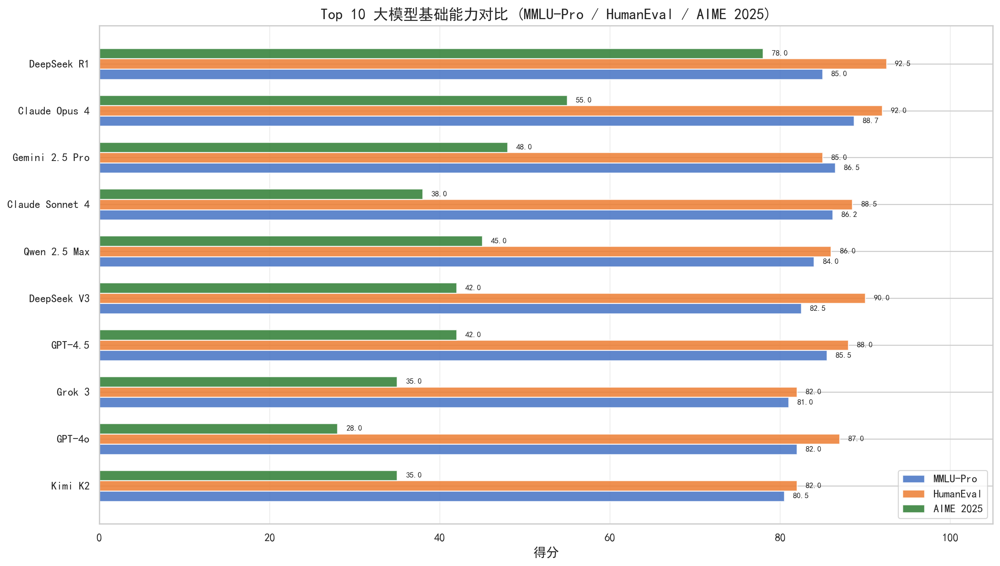
三色分组柱状图展示知识推理（蓝）、代码能力（橙）和数学竞赛（绿）三项得分。 DeepSeek R1 在 AIME 2025 上以78分遥遥领先，HumanEval 92.5分同样最高。 Claude Opus 4 在 MMLU-Pro(88.7)上领先。
从国内外各选3款代表性模型，在5个核心维度上进行雷达图对比。轮廓越饱满，能力越均衡。
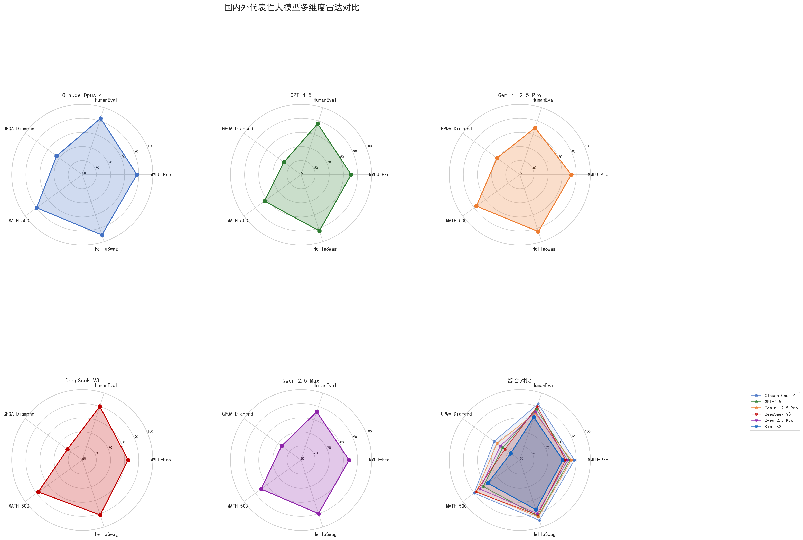
前5张为各模型独立雷达图，第6张为叠加对比。Claude Opus 4 在 MMLU-Pro 和 HellaSwag 维度领先， DeepSeek V3 在 MATH 500 方面接近满分。
综合能力分 vs API 输出价格，气泡大小代表推理速度。国内模型明显聚集在"低价高能"区域。
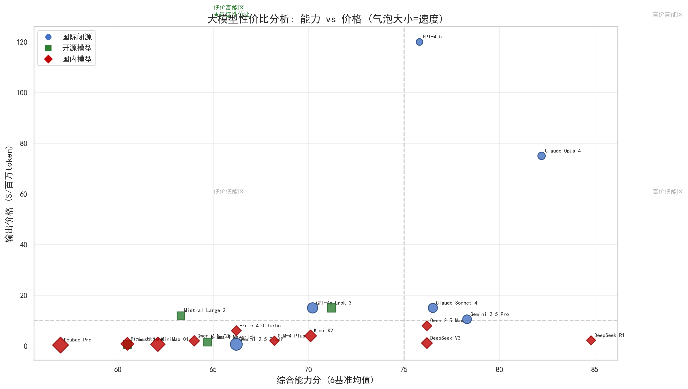
红色菱形=国内模型，蓝色圆点=国际模型。国内模型集中分布在右下角（高能力+低价格）。 DeepSeek V3 是"最靠右且最靠下"的模型——能力高、价格低。
从得分分布和综合排名两个维度剖析国内外差距。国际模型在GPQA Diamond领先，国内模型在数学维度反超。
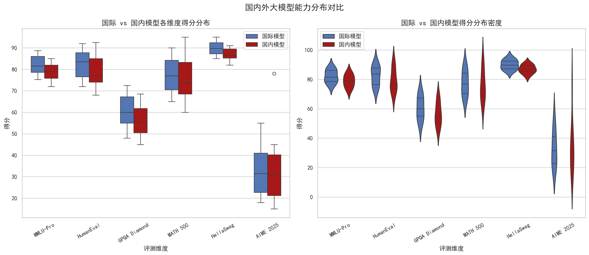
小提琴图展示分布密度，箱线图展示中位数和四分位数。国内模型在GPQA Diamond分布更集中且偏低，在AIME上与国差距最小。
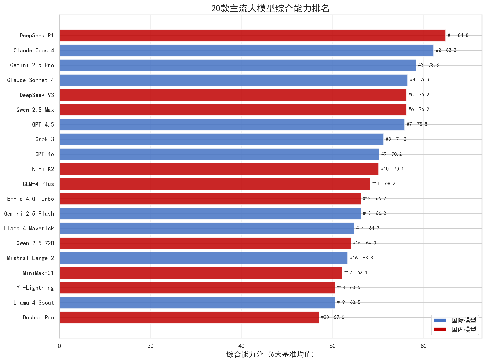
红色=国内模型，蓝色=国际模型。DeepSeek R1(#1, 84.8)、Claude Opus 4(#2, 82.2)、Gemini 2.5 Pro(#3, 78.3)组成前三甲。
一张图纵览20款模型在6大基准上的全部得分。红色越深代表得分越高，快速识别各模型的强项与短板。
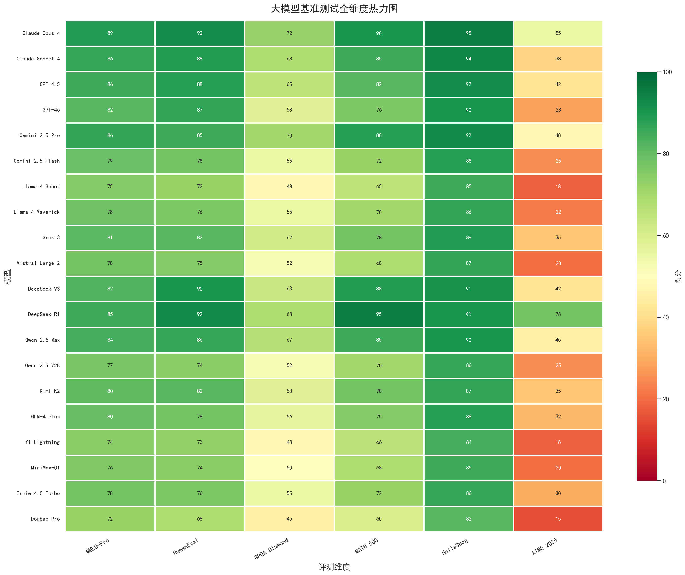
横轴为6大基准，纵轴为20款模型。颜色从深红(高)到绿色(低)。 Claude Opus 4 和 GPT-4.5 在 HellaSwag 上均为95分，DeepSeek R1 在 AIME 上以78分一骑绝尘。
闭源模型在基准得分上平均领先，但开源模型的API价格仅为闭源的1/10至1/30。两者正在形成"能力 vs 成本"的互补生态。
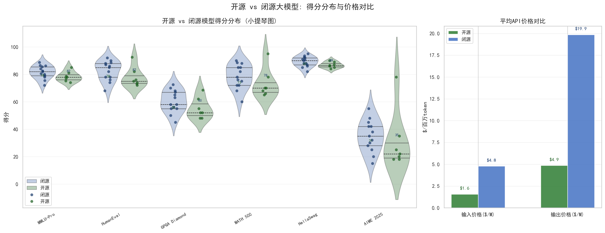
小提琴图+蜂群散点展示每个模型在各维度的具体得分分布（非仅均值）。 右侧为API价格对比。开源模型价格优势在10-30倍，MATH 500差距最小(仅3分)。
基于 SWE-Bench、AgentBench 和 WebArena 三大基准，评估7款模型在工具使用、代码生成、规划推理等6个维度的Agent能力。
注：Agent 各维度得分为基于公开 benchmark 的综合估算值，非精确标准化测量，仅供参考各模型相对能力位置。 Claude Opus 4 在"工具使用"(88)和"代码生成"(90)上领先，DeepSeek V3 代码生成(88)已接近国际顶尖。
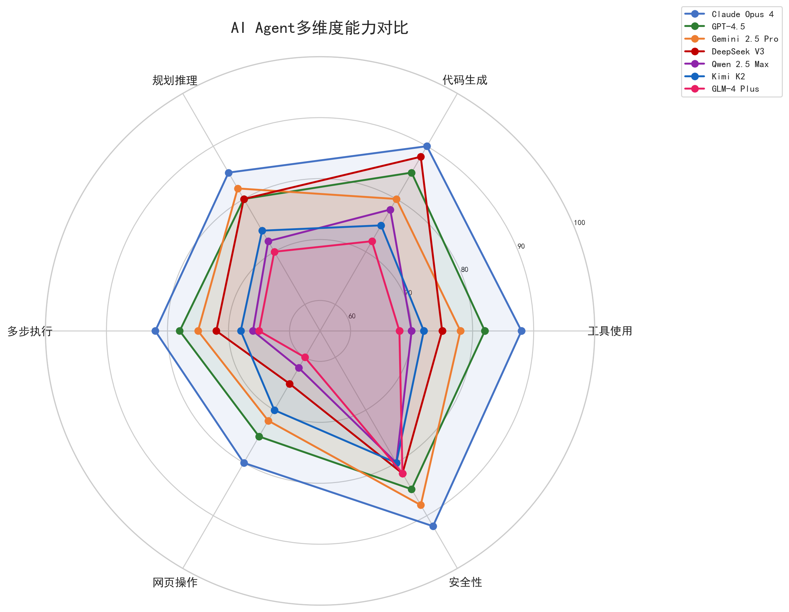
6维度雷达图：工具使用、代码生成、推理规划、多步执行、网页操作、安全性。Claude Opus 4 综合最强(86.2)。
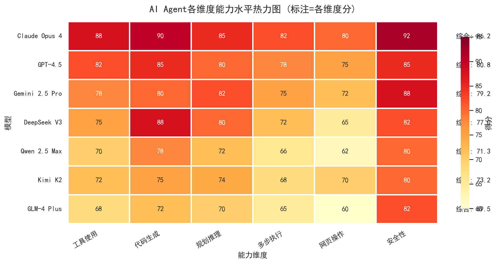
水平热力图清晰展示各模型在6个Agent维度的得分模式。Claude Opus 4 全面领先，DeepSeek V3 代码生成突出。
从推理速度、上下文窗口、模型发布时间线和多维度平行坐标四个补充视角，丰富对模型生态的理解。
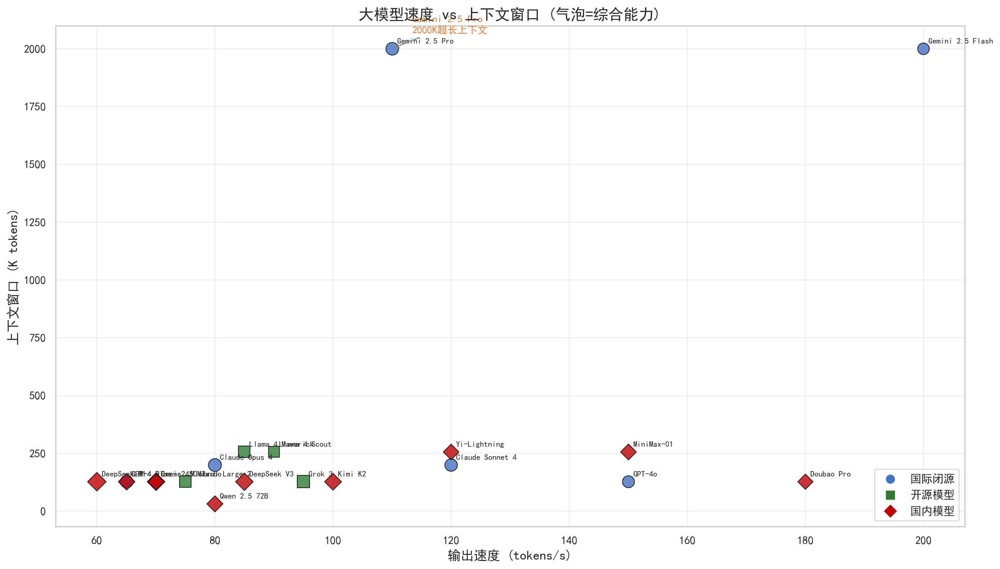
Gemini 2.5 Pro 以2000K上下文窗口遥遥领先，Doubao Pro 以180 tok/s速度排名第一。气泡大小=综合能力分。
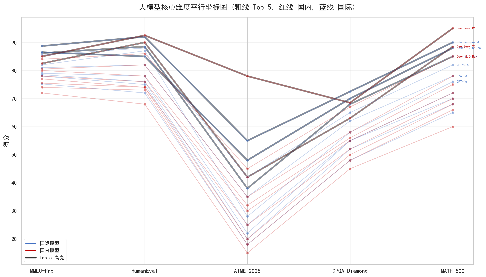
每个模型一条折线，红线=国内，蓝线=国际。粗线为Top 5高亮。可看出国际模型在GPQA Diamond普遍偏高，国内模型在AIME有集中优势。
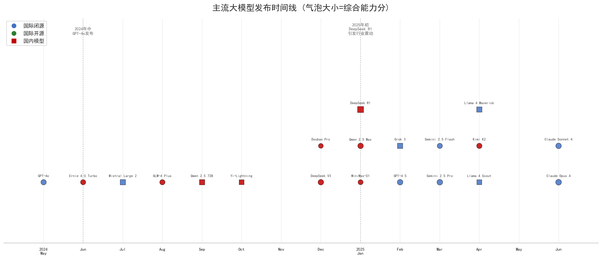
气泡大小=综合能力分，红色方块=国内模型，蓝色圆点=国际模型。2025年Q1是模型发布最密集的时期，DeepSeek R1在2025年1月发布后引发行业震动。
根据不同应用场景对各项能力加权评分。不存在"全能冠军"——最佳选择取决于你的优先级是什么。
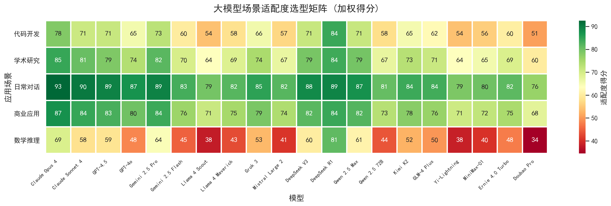
5个场景 × 20款模型的加权评分矩阵。每个场景的权重设置不同： 代码开发重HumanEval+AIME，学术研究重GPQA+MMLU+MATH，商业应用重MMLU+HumanEval+稳定性。
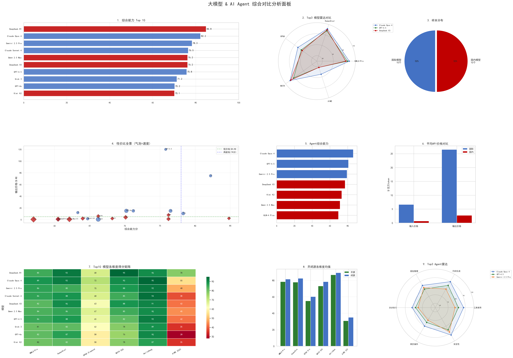
GridSpec 布局整合9张子图：Top 10排名、Top 3雷达对比、性价比全景、 Agent能力排名、开闭源对比、选型热力图等，一站式全景视图。
R1 综合分 84.8(#1)主要来自 AIME 2025 的78分断崖式领先。Claude Opus 4(82.2, #2)在 MMLU-Pro、HellaSwag 等维度上更均衡。选型建议：数学密集型任务选R1，综合任务选Claude Opus 4。
DeepSeek R1 AIME 78分、DeepSeek V3 MATH 88.5分——数学符号推理已成国产模型的"标杆战场"。这一优势源于强化学习(RL)训练策略的创新，而非简单的数据堆砌。
DeepSeek V3 输出价格($1.1/M)仅为 GPT-4.5($120/M)的约1/109。在"每美元能力"度量下，国内模型实现了数量级领先。商业建议：大规模生产环境优先考虑国产模型，特殊场景补充国际模型。
DeepSeek和Qwen的开源策略使开源vs闭源能力差距缩小到平均5-8分，MATH仅差3分。对于需要私有化部署和数据安全的企业，开源模型是唯一可行的选择。2026年下半年值得关注：Llama 5和DeepSeek V4的开源发布。
Claude Opus 4 在工具使用(88)和代码生成(90)上领先。但所有模型的Agent得分(估算值)显示：当前Agent仍处于初级阶段——"真能独立完成复杂任务"的通用Agent尚未出现。2026-2027年值得关注：Claude、GPT和Gemini在Agent能力上的军备竞赛。
2025年上半年见证了模型发布的"寒武纪大爆发"。建议企业和开发者建立季度性模型评估机制，而非一次性选型。同时关注2026年下半年 Llama 5、DeepSeek V4 和 Claude Opus 5 的发布节奏。